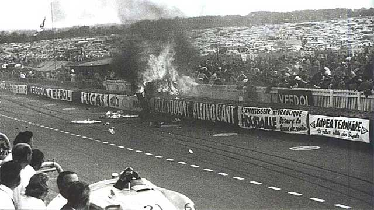

Start, Race and Crash
The Start
After the drivers sprinted to their vehicles, the race started rather uneventful. During the first lap, the key protagonists had already positioned themselves in the top ten. At the end of the opening lap, local hero Levegh was down in seventh place, ahead of his Mercedes team-mates.
"His battle with Hawthorn became so intense, the Englishman missed several calls to pit."
It was good politics, but on the next lap Fangio made his move. His battle with Hawthorn became so intense, the Englishman missed several calls to pit.
The Race
By Lap 35, the pace was blistering as Hawthorne and Fangio handed the lead over and over. At this point, both lead cars were about to lap the slower-paced 300 SLR of Pierre Levegh and the even slower Austin-Healey of Lance Macklin. Needing to refuel, Mike Hawthorne need a fast pit stop to continue to challenge the Mercedes. Pierre Levegh was in front of the two lead cars, and was racing heavily to pass the AH of Macklin to get out of the way. Macklin, on the pit side of the front straight, didn't have the speed and was about to be overtaken by Hawthorne, Levegh, and finally Fangio. Hawthorne passes Macklin just before the front stretch kink and immediately begins to brake, saving as much time as possible for pit entry.
The Crash
The disc brakes work hard to slow the car in front of the unaware Lance Macklin. Macklin then swerves left to avoid the slowing D-Type and continue racing down the front straight. His car swerves in front of the hard charging Levegh as again he is trying to get out of the way of his teammate following close behind. As the track is just 3 car widths wide at this point, Macklins collision avoidance with the D-Type leaves him slow, and directly in the path of the 300 SLR which cannot brake to avoid it at the last second. The 300 SLR vaults over the back of the AH100 and lands on the 5 foot earth embankment on the spectator side of the Pit Straight.
"As the 300 SLR impacts, it tumbles and disintegrates."
As the 300 SLR impacts, it tumbles and disintegrates end over end. Levegh is thrown from the car into the ditch between the embankment and the crowd picket fence and is killed instantly. The front of the Mercedes – front axle, engine, and hood – are launched into the extremely tight-packed crowd. The car's engine can be seen tumbling into the stands, the hood slicing through the crowd as well. The Austin-Healey meanwhile is hit and spun into the embankment and strikes a spectator attempting to avoid the explosion of Levegh's Mercedes, killing the spectator. Macklin struck the pit wall before finally coming to a rest against the stand embankment and hopped out.

As the 300 SLR tumbled to a stop, its high Magnesium infused bodywork and chassis ignited after the fuel tank ruptured and lit the car past its ignition point. The car burned hot for 20 minutes, with even more spectators burned and some fatally injured when marshals attempted throwing water on the chassis, causing molten balls to explode and be sent into the crowd. The chassis would be extinguished after most of the car was burnt beyond recognition.